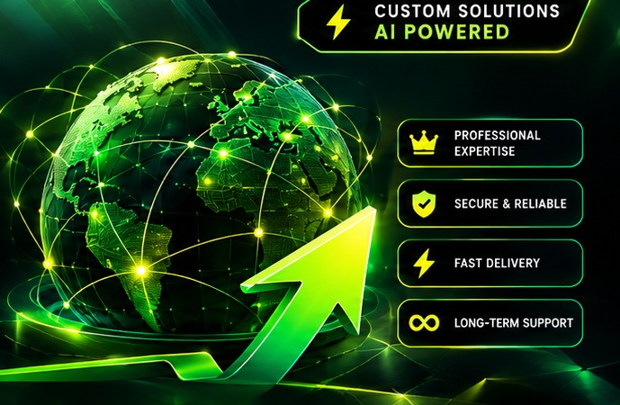

Structure requests and surface items for human review.
Connect
Route data to approved CRM and communication tools.
Why 1PROAGENCY.AI?
Design around your actual workflow
Start with the tools, data and decisions your team uses. Define the automation scope, test failure paths and document the handover. See the process or send a brief.

Have an automation idea?
Describe your workflow and the tools you use so we can discuss a suitable scope.